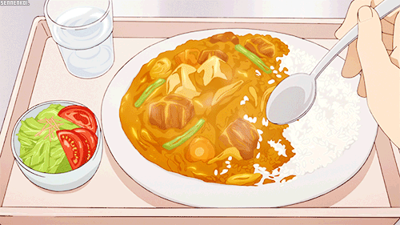

Katsu Curry

Description
Katsu curry is the most complex dish on this website, so prepare yourself for some Masterchef level shit!
Ingredients
- Katsu curry base
- Chicken schnitzel
- 1 Potato
- 1 Onion
- 1 Carrot
- Steamed rice
Method
This recipe assumes you have already cooked your schnitzel and rice. If you haven't go find your own recipe. I am a basic HTML website, not a cooking blog with the authors life story and links to a billion other recipes.
- Chop and stir-fry veg for five minutes
- Add water to cover then simmer for about 15 minutes
- Add katsu base and stir gently and constantly until dissolved
- Cook for 2-3 more minutes
- You can adjust the consistency to make it thinner by adding more water or thicker by reducing based on your preference
Yum!
Home